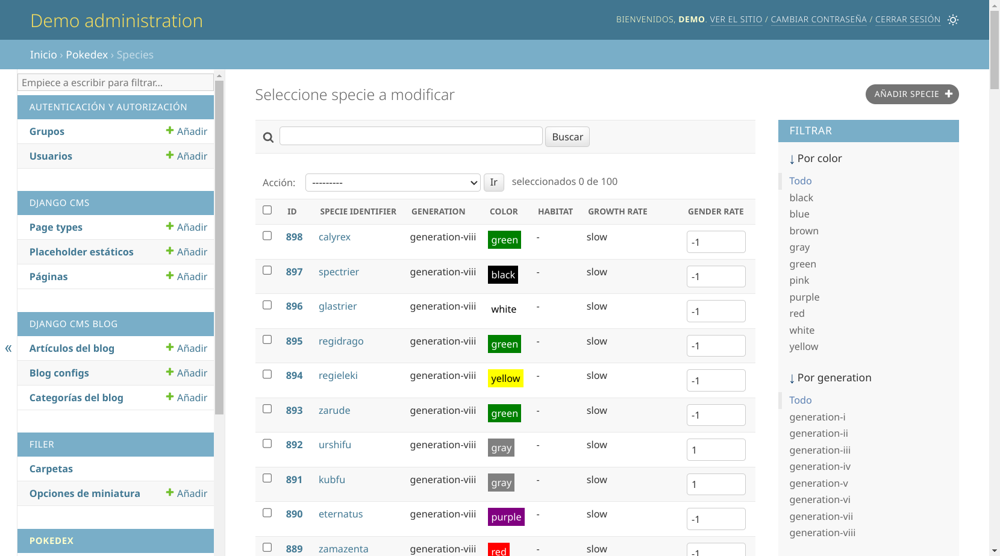
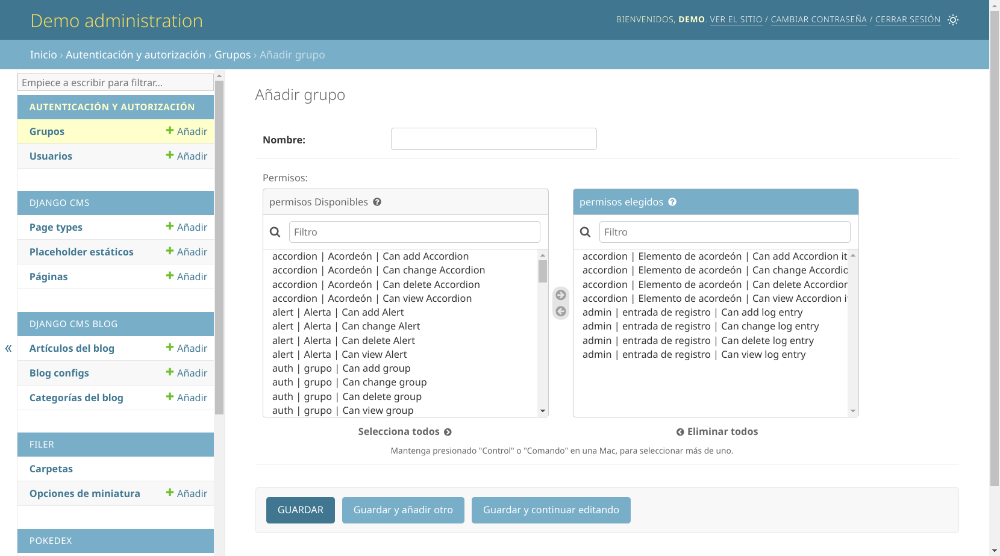
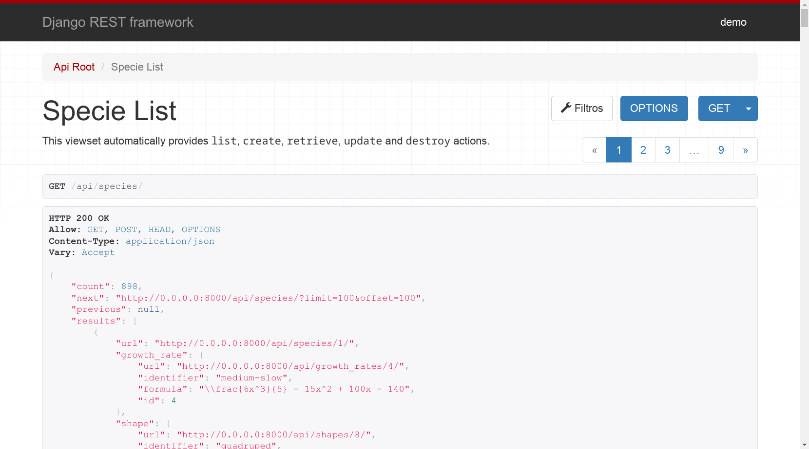
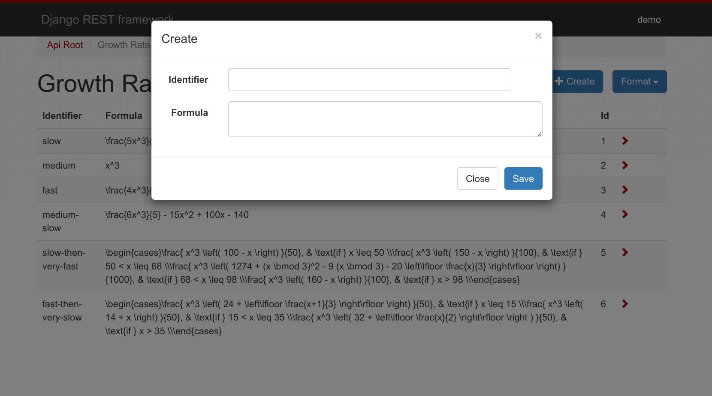
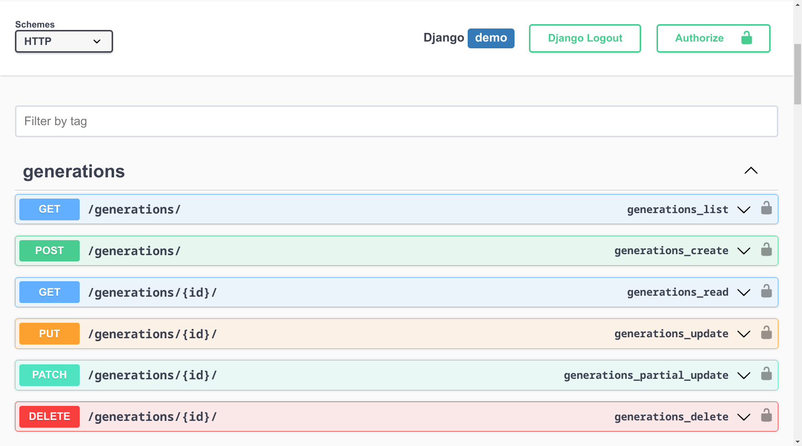
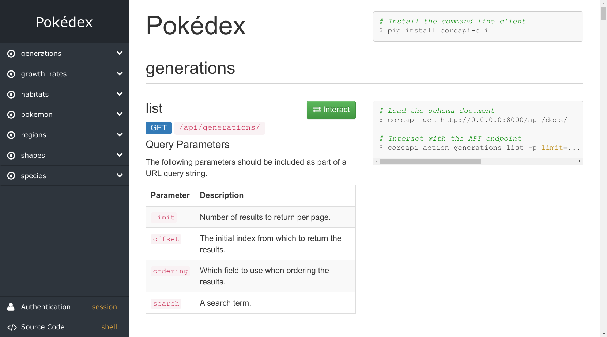
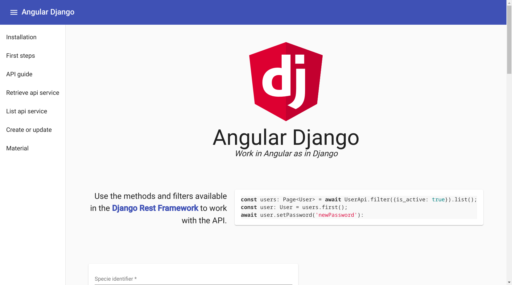
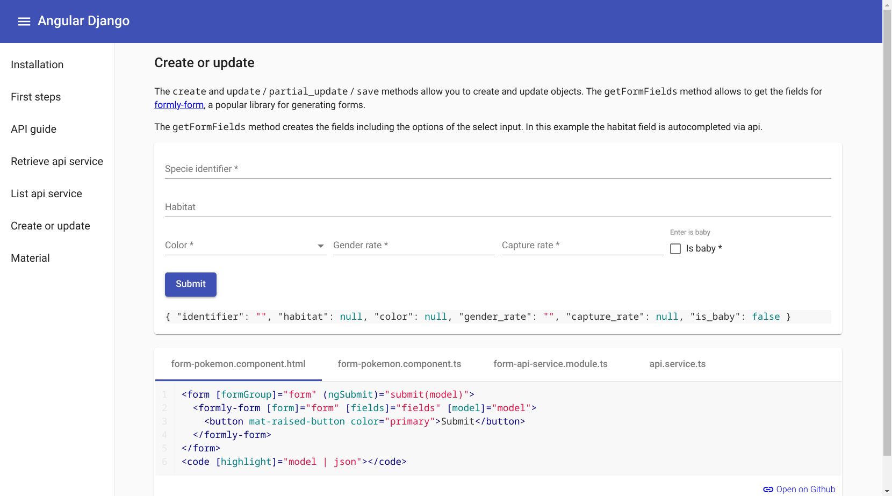
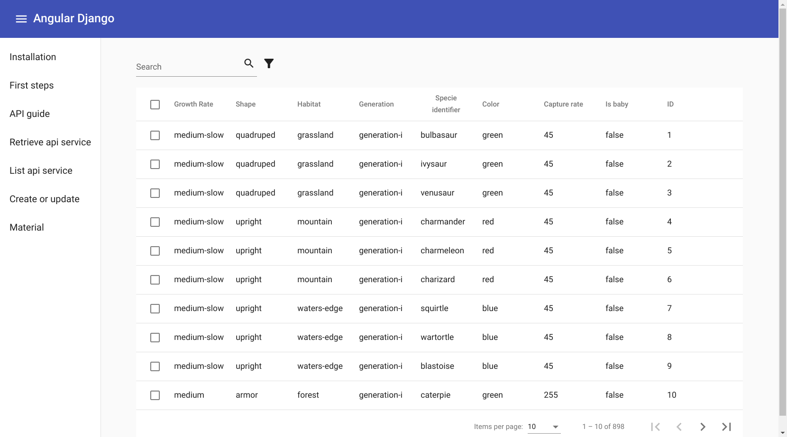

Angular y Django de la mano
{kind=link}
y
{kind=link}
de la mano
👋
Sobre mí Nekmo

Programador Python |
Python Málaga
{kind=link}
Incógnito
Angular + Django
+
Python
{kind=link}
Ventajas Python
Fácil de aprender y sintaxis legible.
Gran popularidad y comunidad.
Potente en análisis de datos, machine learning y más.
Con pilas incluidas.
Paquetes para todo y con gran soporte... como Django.
Django
Angular
Filosofía común
El framework web para perfeccionistas con plazos de entrega
Características
ORM para base de datos.
Panel de administración.
Sistema de usuarios, permisos y sesiones.
Gestión de rutas y vistas.
Middleware.
Caché.
Envío de correos...
ORM
# models.py
# ---------
class Specie(models.Model):
identifier = models.CharField(_('Specie identifier'),
max_length=50)
color = models.CharField(max_length=8, choices=COLORS)
gender_rate = models.SmallIntegerField()
has_gender_differences = models.BooleanField()Administración
Usuarios y permisos
¿Cómo pueden trabajar juntos?
proxy.conf.json
{
"/api": {
"target": "http://localhost:8000",
"secure": false
}
}Django Rest Framework
Ejemplo web
Formulario
Swagger
API Doc
Características
Interpretar y renderizar a múltiples formatos.
Clases genéricas para facilitar operaciones CRUD.
Potentes serializers para trabajar con o sin el ORM.
Paginación, filtrado, búsqueda y ordenación en listados.
Compatible con los validadores y sistema de permisos de Django.
... entre otras opciones.
Cómo se divide
Serializers: representan e interpretan los datos.
Viewsets: gestionan las peticiones y devuelven la respuesta.
Routers: corresponde a las urls que se utilizarán.
Serializers
# serializers.py
# --------------
class SpecieSerializer(serializers.HyperlinkedModelSerializer):
class Meta:
model = Specie
exclude = ()Serializer personalizado
# serializers.py
# --------------
class SpecieSerializer(serializers.HyperlinkedModelSerializer):
identifier = serializers.CharField()
color = serializers.ChoiceField(choices=COLORS)
gender_rate = serializers.IntegerField()
has_gender_differences = serializers.BooleanField(default=False)
class Meta:
model = Specie
exclude = ()Viewsets
class SpecieViewSet(viewsets.ViewSet):
"""A simple ViewSet for listing or retrieving species."""
def list(self, request):
queryset = Specie.objects.all()
serializer = SpecieSerializer(queryset, many=True)
return Response(serializer.data)
def retrieve(self, request, pk=None):
queryset = Specie.objects.all()
user = get_object_or_404(queryset, pk=pk)
serializer = SpecieSerializer(user)
return Response(serializer.data)ModelViewSet
class SpecieViewSet(viewsets.ModelViewSet):
"""
This viewset automatically provides `list`, `create`, `retrieve`,
`update` and `destroy` actions.
Additionally we also provide an extra `photo` action.
"""
queryset = Specie.objects.select_related('growth_rate', 'shape',
'habitat')
serializer_class = SimpleSpecieSerializer
filter_class = SpecieFilter
ordering_fields = ('identifier', 'generation', 'evolves_from_specie',
'color')
search_fields = ('identifier', 'generation__identifier',
'shape__identifier')
@action(detail=True)
def photo(self, *args, **kwargs):
obj = self.get_object()
photo_url = PHOTO_FORMAT_URL.format(**vars(obj))
return Response(headers={'Location': photo_url},
status=status.HTTP_302_FOUND)Routers
# routers.py
# ----------
router = DefaultRouter()
router.register(r'pokemon', viewsets.PokemonViewSet)
router.register(r'species', viewsets.SpecieViewSet)
router.register(r'growth_rates', viewsets.GrowthRateViewSet)
router.register(r'shapes', viewsets.ShapeViewSet)
router.register(r'habitats', viewsets.HabitatViewSet)
router.register(r'generations', viewsets.GenerationViewSet)
router.register(r'regions', viewsets.RegionViewSet)¿Cómo usamos nuestra API en Angular?
Interfaces en Angular
export interface Specie {
url: string;
identifier: string;
color: string;
gender_rate: number;
has_gender_differences: boolean;
}Servicios de Angular
@Injectable({
providedIn: 'root'
})
export class SpecieService {
private readonly url = '/api/species/';
constructor(private http: HttpClient) {}
list(): Observable<Specie[]> {
return this.http.get<Specie[]>(this.url);
}
}Angular-django
Angular-django forms
Angular-django tables
Demo
¿Dónde se encuentra?
¿Y esta presentación?
Código QR
{kind=link}
¡Muchas gracias a todos!
Contactar
🌐 Sitio web: nekmo.com
📫 Email: contacto@nekmo.com
🐦 Twitter: @nekmocom
📱 Telegram: @nekmo
💡 Jabber: nekmo@nekmo.org